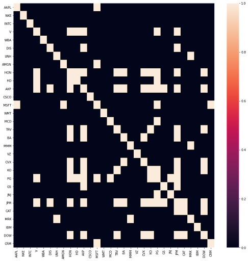

Stock Predictor Project
The purpose of this project is to demonstrate the effectiveness of graph convolutional network on limited data of only price movement in comparison to the other model.
Click Me For Link to Project
Why stock market prediction with GCN?
Stock market prediction is a lucrative domain to which machine learning methods can be applied, and recent advancements in the field of artificial intelligence are heavilyaiding this prediction. Powerful new types of neural network models called graph convolutional networks (GCNs) can effectively learn from data contained within a network structure. GCNs facilitate ML approaches on graphs similarly to the way traditional CNNs conveniently operate onstructured data like images. Whereas before one might derive features from the graph’s inherent properties and use those for a machine learning task, one now has access to powerful algorithmsthat can learn directly from the graph itself. Stock markets consist of highly self-dependent data andhave an inherent network structure that can be appropriately exploited using these techniques
Data and objective
For this project, we collected stock price data from the 30 stocks that comprise the Dow Jones Market Index over a 12-month period (127 trading days) ranging from January 2020 to January 2021 using Yahoo Finance’s API. We chose this data because we did not want to compare pre-pandemic stock prices to post-pandemic prices, as market conditions varied drastically due to the pandemic,but we still wanted to work with as much data as we possibly could given this constraint. Our model features consist of opening price, low price, high price, and trading amount. The features are min-max normalized to deal with discrepancies of scale between stock price (in the 100s) and tradingamount (in the 10000s). Our labels for each day will be 1 if closing price is greater than that day’sopening price and 0 otherwise. We split the data into a 70-30 train-test split for prediction.
Baseline Models
Arima Model
Arima model serves as a traditional regression prediction. These types of regression were typically used in the stock market prediction, serving as a perfect baseline in our prediction task.Fully Connected Network
Fully connected network serves as a baseline from a neural network standpoint. Its maturity since its initial creation allow for a decent comparison to GCN.Graph Convolutional Network
We used graph convolutional network as it can take advantage of its structural information to gather the feature information from its neighbor to output a prediction. Since our price movement data on a daily basis are not independent from each other, therefore having meaningful connections between using adjacancy matrix can be leveraged for learning. Example of our correlation/adjacency matrix:
Results
| Model | Accuracy |
|---|---|
| Arima Model | 53.6 |
| Fullly Convolutional Network | 53.8 |
| Graph Convolutional Network | 56.22 |